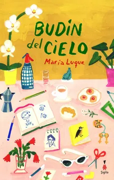

Budín del Cielo
María Luque
De qué trata
Rosa es una señora feliz. Jubilada de una de las pasiones de su vida —enseñar matemática a «sus pichoncitos» en el colegio—, vive sola en un departamento lleno de luz que da a la calle. Tiene buena mano para la cocina, la pone contenta recibir noticias de sus alumnos y, sobre todo, disfruta de un don que no oculta a nadie: puede hablar con las flores y los pájaros.
Por qué dialoga con Latinoamérica hoy
María Luque es autora e ilustradora; durante la pandemia comenzó a observar pájaros en un parque cercano, fascinada por sus comportamientos y dinámicas, lo que luego se convertiría en un pilar fundamental de la historia. El personaje de Rosa está inspirado en su tía abuela Roma, una maestra que siempre compartía anécdotas sobre sus alumnos. Como ilustradora, hubiera sido «muy fácil» para ella hacer que su personaje fuera maestra de artes plásticas. Sin embargo, en sus proyectos le gusta investigar temas nuevos y aprender cosas que le son ajenas, por lo que eligió las matemáticas como un reto personal. El título del libro surge del recuerdo de su padre de que su tía Roma preparaba una receta llamada «Budín del cielo».